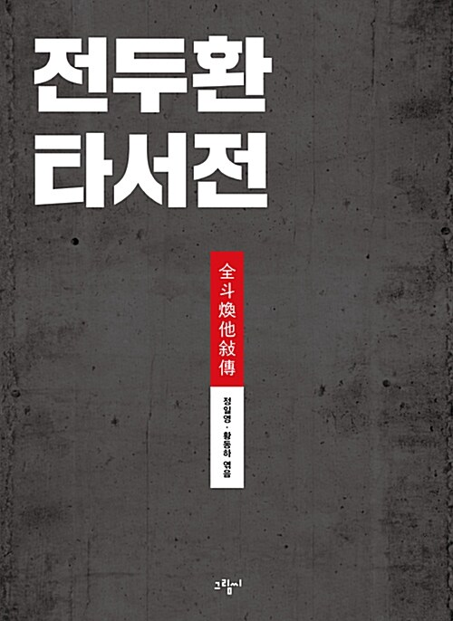

책과 영화가 던지는 질문, 판결이 정하는 경계
서울의 봄과 26년을 역사 기록과 함께 읽는 법. 작품 속 장면을 사실의 증거로 바꾸지 않는다.

스크린의 설득력과 역사적 입증은 다르다
영화는 사건의 복잡한 시간을 인물의 선택과 장면의 긴장으로 보여준다. 그 설득력은 역사에 대한 관심을 여는 힘이지만, 특정 장면이 실제로 있었다는 증명은 아니다. 한국영상자료원의 공식 정보에서 서울의 봄은 김성수 감독의 작품이며 각본 크레디트는 홍인표·홍원찬·이영종·김성수로 확인된다. 26년은 강풀 원작, 조근현 감독의 영화다. 두 작품의 원작·창작자를 섞지 않는 것은 가장 기초적인 출발점이다.
반란의 밤을 읽는 두 개의 층위
서울의 봄을 계기로 12·12를 이해하려면 극의 지휘관과 실제 인물을 구별해야 한다. 이어 대법원 판결이 무엇을 반란으로 봤는지 확인할 수 있다. 적법절차 없이 지휘관을 체포하고 군 지휘권에 반항한 행위라는 판단은 장면의 감정과 별개의 역사적·법적 기준이다. 극중 대사가 인상적이었다는 이유로 실제 인물의 발언으로 옮기지 않는다. 작품의 질문과 기록의 답을 함께 적을 때 극화와 사실 사이의 간격도 설명할 수 있다.
피해가 다음 세대에 남는다는 질문
26년의 가상 단죄 서사는 피해와 책임이 다음 세대에 어떻게 전해지는가라는 질문을 연다. 이를 실제 사건의 경과나 권장할 해결책으로 읽어서는 안 된다. 재판과 공적 조사, 피해 회복이 충분했는지를 묻는 방식으로 연결할 수 있다. 전두환의 유죄 확정, 뒤이은 사면, 피해자의 회복은 각각 다른 문제다. 작품이 일으키는 감정은 이 차이를 지우기보다 더 자세히 들여다보게 하는 계기가 되어야 한다.
세 책은 서로 다른 읽기의 입구다
고나무의 아직 살아있는 자 전두환은 북콤마가 2013년 펴낸 르포다. 정아은의 전두환의 마지막 33년은 사이드웨이가 2023년 펴냈다. 정일영·황동하가 엮은 전두환 타서전은 그림씨의 2017년 책이다. 이는 이번에 다시 열어 확인한 서지와 출판 소개의 범위다. 인물과 주변 관계를 따라가는 질문, 퇴임 뒤 책임을 묻는 질문, 당시 신문을 후대의 시선과 함께 읽는 질문으로 나누어 접근할 수 있다. 이 구분은 편집부의 독서 안내이며 책 본문을 모두 분석했다는 뜻은 아니다.
책을 읽었다는 말의 무게
이번 기획에 선정한 책은 아직 살아있는 자 전두환, 전두환의 마지막 33년, 전두환 타서전이다. 현재 확인 범위는 출판 정보·목차와 기존 기획 자료다. 실제 책 전체를 읽은 독후평이 아니므로 저자에게 구체 의혹을 새로 귀속하거나 쪽수 없는 직접 인용을 만들지 않는다. 원문을 확보하면 작품의 주장, 취재원의 증언, 편집자의 해설을 나눠 검토할 수 있다. 읽기의 깊이는 자극적인 일화의 수가 아니라 주장 하나를 기록과 대조하는 방식에서 드러난다.

출처와 확인 범위
판결·조사결정·기관기록의 판단 주체와 시점을 구별합니다. 현재 미납 추징액·개별 자산·현행 법령의 후속 변경은 이번 확인 범위가 아닙니다. 책 완독·영화 전체 재시청 서평이 아닙니다.